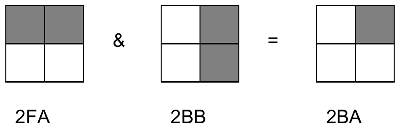

The 27th Annual ACM International Collegiate Programming Contest World Finals sponsored by IBM · Problem F
As the exchange of images over computer networks becomes more common, the problem of image compression takes on increasing importance. Image compression algorithms are used to represent images using a relatively small number of bits.
One image compression algorithm is based on an encoding called a “Quad Tree.” An image has a Quad Tree encoding if it is a square array of binary pixels (the value of each pixel is 0 or 1, called the “color” of the pixel), and the number of pixels on the side of the square is a power of two.
If an image is homogeneous (all its pixels are of the same color), the Quad Tree encoding of the image is 1 followed by the color of the pixels. For example, the Quad Tree encoding of an image that contains pixels of color 1 only is 11, regardless of the size of the image.
If an image is heterogeneous (it contains pixels of both colors), the Quad Tree encoding of the image is 0 followed by the Quad Tree encodings of its upper-left quadrant, its upper-right quadrant, its lower-left quadrant, and its lower-right quadrant, in order.
The Quad Tree encoding of an image is a string of binary digits. For easier printing, a Quad Tree encoding can be converted to a Hex Quad Tree encoding by the following steps:
For example, the Hex Quad Tree encoding of an image that contains pixels of color 1 only is 7, which corresponds to the binary string 0111.
You must write a program that reads the Hex Quad Tree encoding of two images, computes a new image that is the intersection of those two images, and prints its Hex Quad Tree encoding. Assume that both input images are square and contain the same number of pixels (although the lengths of their encodings may differ). If two images A and B have the same size and shape, their intersection (written as A & B) also has the same size and shape. By definition, a pixel of A & B is equal to 1 if and only if the corresponding pixels of image A and image B are both equal to 1.
The following figure illustrates two input images and their intersection, together with the Hex Quad Tree encodings of each image. In the illustration, shaded squares represent pixels of color 1.

The input data set contains a sequence of test cases, each of which is represented by two lines of input. In each test case, the first input line contains the Hex Quad Tree encoding of the first image and the second line contains the Hex Quad Tree encoding of the second image. For each input image, the number of hexadecimal digits in its Hex Quad Tree encoding will not exceed 100.
The last test case is followed by two input lines, each containing a single zero.
For each test case, print “Image” followed by its sequence number. On the next line, print the Hex Quad Tree encoding of the intersection of the two images for that test case. Separate the output for consecutive test cases with a blank line.
2FA 2BB 2FB 2EF 7 2FA 0 0
Image 1: 2BA Image 2: 2EB Image 3: 2FA